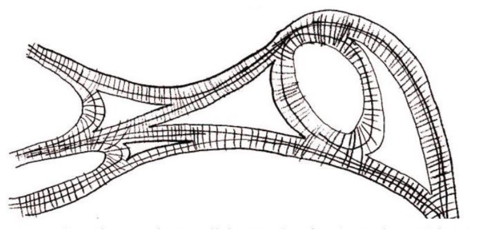
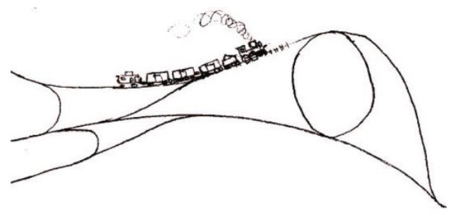
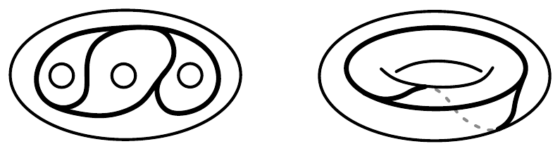
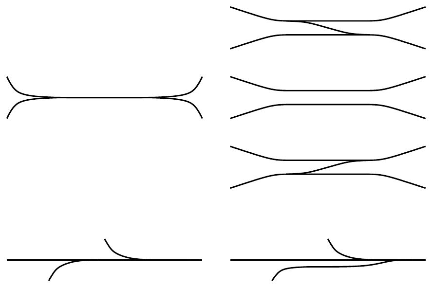
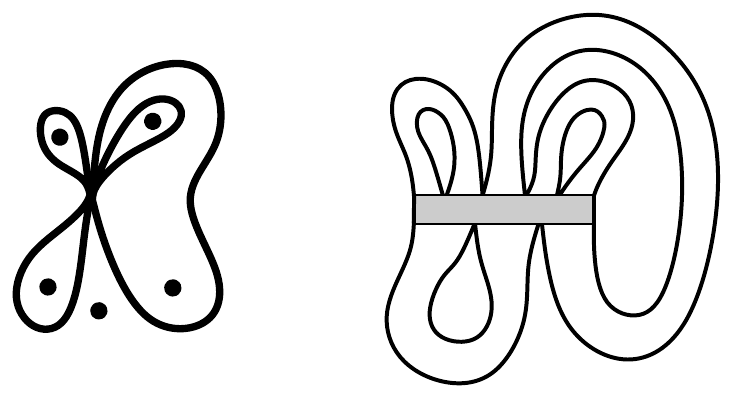
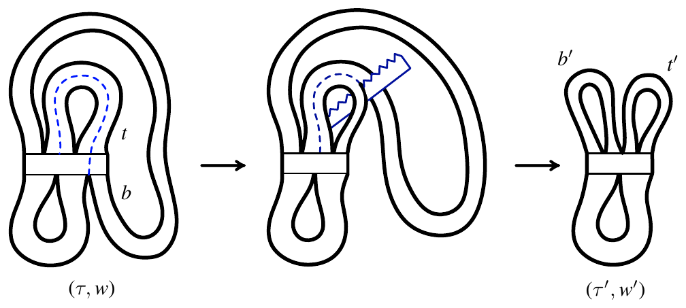
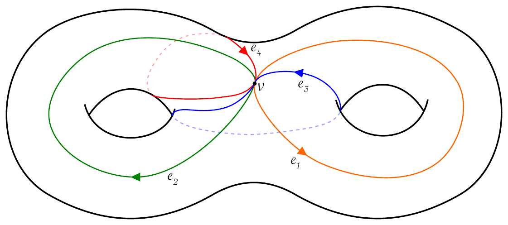

Train tracks: carrying a tangle of paths on a few weighted branches¶
Thurston's train tracks squeeze a tangle of curves onto a few weighted branches that can be edited directly, and a compressed block's runs form something very like one.

What a train track is. Draw a long, looping curve on a surface: a sphere with a few holes, say, or a doughnut. Many stretches of the curve run side by side before they part. A train track replaces all those side-by-side strands with a single branch, and writes on the branch how many strands it stands for. Where strands part or meet, the branches join at a switch, smoothly, like railway points, and the numbers must add up there. William Thurston introduced train tracks in the late 1970s to study curves and the maps that move them on surfaces. A few branches and a few numbers then stand for a curve that might wind around thousands of times.
Why it matters to mibz2. Undoing bzip2's Burrows–Wheeler transform (BWT) means following one long path through the rows of a block until it has visited every row; each step reads one byte. Most of the cost is that walk. mibz2's kernels save work by treating whole groups of rows that move together as one thing (A new way back from the BWT, Open Returns). That is the train-track idea in other clothes. The central operation of train tracks, splitting, is the same operation as the Rauzy–Veech induction behind our Cells kernels. Dunfield and Thurston say so in as many words, and we show their figure in section 3.
What this post does. It explains train tracks from the beginning using figures from the papers that define them (sections 1–3). It then lays a small compressed block over the picture: its runs become branches, and the places where groups of rows merge or part become switches (section 4). It shows the next layer of the theory, maps that write words (section 5), and ends with what the theory gives us already and what is still open (section 6). No new decoder comes out of it yet; this is a map of the territory.
1. From curves to branches¶
The name comes from Thurston's own drawings. In his lecture notes he asks us to picture a curve on a surface as "many parallel strands in thin, branching corridors". Then: "Imagine squeezing the nearly parallel strands of γ in each corridor to a single strand. One obtains a train track τ (with switches) which approximates γ. Each leaf of γ may be imagined as the path of a train running around along τ."
Thurston's corridors, and the track they squeeze down to


The figure below, from Dunfield and Thurston's 2006 paper, shows two train tracks: one on a sphere with four holes (drawn as a disc with three holes plus the outside), and one on a torus. Each thick line is a branch. Where two branches meet a third, they arrive from the same side and merge smoothly; that junction is a switch.
Two train tracks

A track becomes useful once it has numbers. Each branch gets a non-negative weight, the number of strands it carries. At every switch the weights must balance. In Masur, Mosher and Schleimer's words, a transverse measure "satisfies the switch conditions: for every switch \(x \in \tau\) we have \(w(a) + w(b) = w(c)\)" (2010, p. 4). Here \(a\) and \(b\) are the two branches on the narrow side of the switch and \(c\) is the branch on the wide side. So if 5 strands come in on one branch and 3 on the other, the shared branch carries 8.
A weighted track like this stands for a whole curve, or a whole family of curves, without drawing any of them. That is the first idea: many paths that travel together are stored once, with a count.
2. Editing the track instead of the curves¶
The second idea is what makes train tracks a tool rather than a notation. The track can be changed by a local move, and the change can be computed on the weights alone, while the curve it stands for stays the same.
The basic move is a split. Take a branch that is the wide side of a switch at both ends (a large branch). Two pairs of strands enter it, one pair at each end, and run side by side through it. Splitting pulls the branch apart. There are three ways to do it, depending on which strands end up next to which.
The three splits of a large branch, and a slide

The weights decide which split to make. Two groups of strands enter the large branch on the same side, one from each end. If one group is heavier, the right or left split keeps every strand on the track, according to which; if they weigh the same, the central split does. The branch that now joins them carries the difference of the two weights. Repeat the move and the weights shrink by repeated subtraction, the way Euclid's algorithm shrinks two numbers to their greatest common divisor. On a torus, a sequence of left and right splits spells out the continued fraction of a curve's slope (Mosher 2003).
So the cost of a split is a comparison and a subtraction, however many strands the branch carries. That is the property we care about.
3. Interval exchanges are train tracks, and splitting is Rauzy induction¶
mibz2 does not start from curves. It starts from an interval exchange: a line cut into pieces, with the pieces put back in a different order. The BWT's LF map is one (A new way back from the BWT builds it in full): the rows are the line, and each run of equal letters in the BWT's last column is a piece that LF moves as one block, keeping its rows in order.
Dunfield and Thurston show that an interval exchange is a train track with a single switch. In their Figure 17, the left picture is a track on a sphere with five holes whose branches all meet at one point. The right picture thickens it: the shaded bar is the line being cut up, and each loop is a band that carries one piece of the bar's top edge to a piece of its bottom edge.
An interval exchange drawn as a train track

How to read these band pictures. Don't read the black lines as paths. Read the gap between each pair of neighbouring black lines as a band: a strip carrying a whole interval of points side by side. The shaded horizontal bar is the interval itself. A band leaves the bar from one stretch of its edge and comes back to another stretch, and every point carried along the band arrives in the same order it left. The loops that leave and return on the same side of the bar, and look like a pair of rabbit ears, are bands that reverse direction; Dunfield and Thurston allow them. The interval exchanges in mibz2 never have them: every band of LF goes from the top edge to the bottom edge. One band per run of the BWT's last column, with the run's width as the band's weight.
Then they split it. In the next figure, \(t\) and \(b\) are the rightmost bands on the top and the bottom of the bar. Band \(t\) is wider than band \(b\), so \(b\) is cut out of \(t\)'s end and glued on: the new track \((\tau', w')\) has a band \(t'\) of weight \(w_t - w_b\) and a band \(b'\) of weight \(w_b\), and nothing else changes. If \(t\) carries 7 points and \(b\) carries 3, after the split \(t'\) carries 4 and \(b'\) carries 3. No point was dropped; the same points are carried by differently drawn bands.
Splitting an interval exchange

That sentence is the bridge. Rauzy–Veech induction, the operation behind our Cells kernels, is train-track splitting: compare the two rightmost pieces, subtract the shorter from the longer, and record which piece followed which. Dunfield and Thurston use the same move to count how many separate closed curves a weighted track carries, without ever drawing one. That is close to our problem, but not the same: they need the number of curves, and a decoder needs the exact order of every byte along one of them.
4. A compressed block as a weighted track¶
Here is what the picture looks like for a real (tiny) block. bzip2 turns the text banana$ into the last column annb$aa, with the original text starting at row 4. Group the column into runs: a, nn, b, $, aa, five runs over seven rows. LF moves each run as a block. Where the image of one run lands in another, we draw an arc between them and give it the number of rows it carries. That gives the run network:
| Arc | Rows it carries | What happens there |
|---|---|---|
a → nn |
1 | row 0 goes to row 1 |
nn → aa |
2 | rows 1 and 2 travel together to rows 5 and 6 |
b → $ |
1 | row 3 goes to row 4 |
$ → a |
1 | row 4 goes to row 0 |
aa → nn |
1 | row 5 goes to row 2 |
aa → b |
1 | row 6 goes to row 3 |
Read as a track, the runs are branches and the weights are the row counts. Two switches stand out. At nn, two single strands, from a and from aa, merge into a branch of weight 2, and the order is fixed: the strand from a is on top (row 1), the one from aa below it (row 2). At aa, that bundle of 2 parts again, one strand to nn and one to b. Every switch condition holds: \(1 + 1 = 2\) at nn, and \(2 = 1 + 1\) at aa. Following the strands from row 4 visits rows 4, 0, 1, 5, 2, 6, 3 and spells $ananab, which is banana$ read backwards.
On real blocks the same network is cheap to build: one pass over the runs, with no row-level work. We measured it on six blocks of Wikidata JSON, each about 900,000 rows (the census). It has 1.21 to 1.25 arcs per run. Between 88 and 89 percent of runs are plain stretches of track, with one arc in and one arc out, and merging those leaves a branching core of about a ninth of the runs. So a block's paths really do travel in bundles along a few branches and part at a modest number of switches.
One piece is still missing before this is a train track in Thurston's sense: a track lives on a surface, and the order of strands at each switch comes from that surface. For a BWT block we have a surface. Pairing LF with the move to the next row glues the rows, as unit squares, into a closed surface whose corners all sit at run boundaries (the origami lift). The run network is drawn on it.
5. Maps that write words¶
There is a second kind of train track, from Bestvina and Handel's work on maps of graphs, and it is closer to what a decoder does. Here the track is a graph, and a map sends each edge not to one edge but to a whole path of edges. Rafiqi and Zeytin's survey (2026) gives an example on a surface of genus 2, a doughnut with two holes: a track with four edges \(e_1, \dots, e_4\) meeting at one vertex \(v\), and a map that sends, for instance, \(e_1 \mapsto e_1 e_2 e_3 e_1 e_3\) and \(e_4 \mapsto e_1 e_2 e_4 e_3\).
A track on a genus-2 surface, mapped into itself

Such a map holds two kinds of information. Counting how often each edge appears in each image gives a matrix of non-negative integers, and its largest eigenvalue says how fast paths grow when the map is applied again and again. The words themselves give the order. For a decoder only the second kind is enough: knowing that a stretch of text holds three as and two ns does not say which comes first.
mibz2 already builds such words. Each step of the Rauzy–Veech induction in Cells records which piece followed which, and the result is a grammar whose rules spell the block. In the language of this section, that grammar is the sequence of edge-to-path maps the splits produce.
6. What is known, and what is open¶
The table below sets the parts of the theory against what mibz2 already does.
| Train-track idea | In mibz2 | Status |
|---|---|---|
| Strands that travel together stored once, with a weight | Runs, and Open's convoys of rows that move together | in use |
| Splitting a weighted track | Rauzy–Veech induction in Cells | in use; the same move |
| Maps that send edges to words | Cells' grammar of return words | in use |
| Weights and their matrix | Counts of each letter | known; cannot give the order |
| The run network as a track on a surface | Built cheaply from the runs; surface from the origami lift | measured; the census is above |
| Folds, and the "illegal turns" of Bestvina and Handel | none | open |
| Choosing a different track for the same paths | none | open |
The open rows are where something new could come from. Bestvina and Handel simplify a map of graphs by folding (gluing together two edges that leave a vertex in the same direction) and by tracking which pairs of directions are eventually glued, the illegal turns. Folding is cheap and works on edges, not on the paths they carry. If the run network can be turned into such a map without walking the rows, its illegal turns might single out the few branchings where the order of the text is really decided. That is a question, not a result. Two easy uses of the network have already failed: its branching core has no small cuts to split it at, and walking the rows of the core costs more than Open does (the census).
These leads now sit in the project's list of open mathematical directions, for the research agent working on new decoders to take up. The general point holds whatever comes of them: a decoder gets faster when it stops following paths one at a time and starts editing a small object that carries many of them. Rauzy–Veech induction was the first such operation we found, and train tracks are the theory it belongs to.
Sources:
- W. P. Thurston, The Geometry and Topology of 3-Manifolds, lecture notes, Princeton (1980): §8.9, p. 204.
- N. M. Dunfield and D. P. Thurston, A random tunnel number one 3–manifold does not fiber over the circle, Geometry & Topology 10 (2006), 2431–2499: §7.1–7.3, Figures 16, 17 and 18 (pp. 2471–2472).
- H. Masur, L. Mosher and S. Schleimer, On train track splitting sequences, Duke Mathematical Journal 161 (2012); arXiv 2010: §2, Figure 1 (p. 4).
- A. Rafiqi and A. Zeytin, Thurston's legacy at the interface of surface dynamics, train tracks, and arithmetic, arXiv 2026: §4.2, Figure 1 (p. 19).
- L. Mosher, What is… a train track?, Notices of the AMS 50 (2003), 354–356.
- M. Bestvina and M. Handel, Train tracks and automorphisms of free groups, Annals of Mathematics 135 (1992), 1–51.
- Research records: the run network and its census; the origami lift.
Figures from the papers above are reproduced at reduced size for commentary and criticism, each credited in its caption.